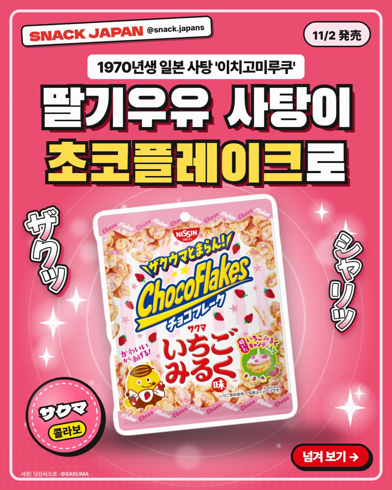
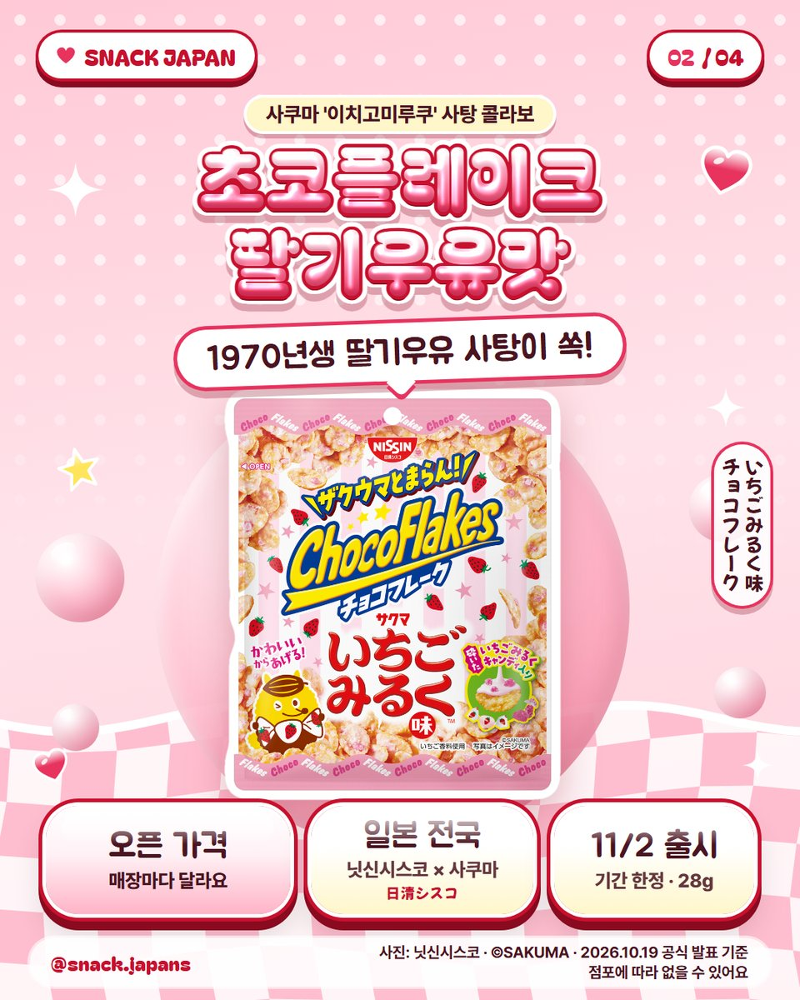
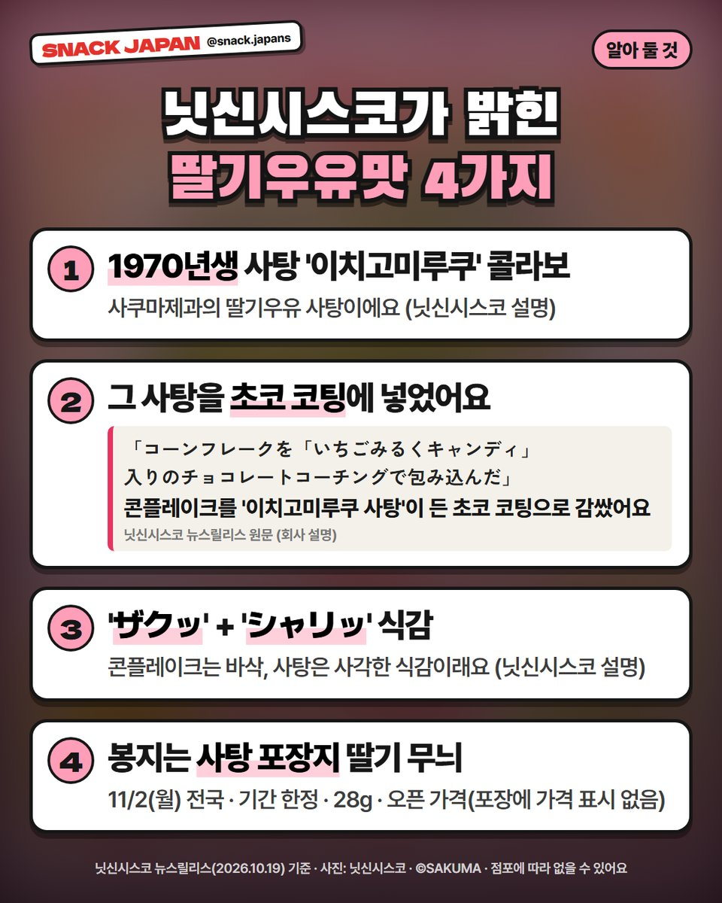
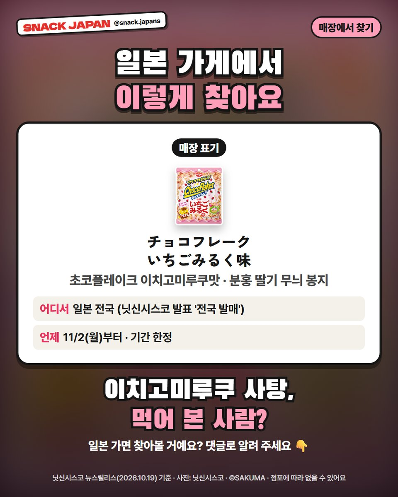

일본 초코플레이크 이치고미루쿠맛 출시, 1970년생 딸기우유 사탕 콜라보
11/2 일본 전국 기간 한정! 사쿠마 '이치고미루쿠' 사탕을 넣은 초코플레이크가 나와요.
분홍 딸기 무늬 봉지, 어디서 많이 본 것 같지 않나요? 🍓
1970년부터 나온 일본 딸기우유 사탕
사쿠마 '이치고미루쿠(いちごみるく)'가
초코플레이크 속으로 들어갔어요!
닛신시스코 발표 기준으로 정리해 볼게요.

1. 11/2부터 일본 전국, 기간 한정!
- 만드는 곳: 닛신시스코 (사쿠마제과 콜라보)
- 판매 지역: 일본 전국
- 출시: 11/2(월), 기간 한정
- 용량: 28g
- 일본 이름: チョコフレーク いちごみるく味
- 가격: 오픈 가격(포장에 가격 표시 없음) · 사진 카드에 정리해 뒀어요

2. 사탕을 초코 코팅에 넣었대요
닛신시스코 발표에 따르면
콘플레이크를 '이치고미루쿠 사탕'이 든 초코 코팅으로 감쌌대요.
- 콘플레이크는 바삭(ザクッ)
- 사탕은 사각(シャリッ)
두 식감이 겹친다고 해요 (닛신시스코 설명).

3. 이치고미루쿠가 뭐길래?
사쿠마제과의 딸기우유 사탕으로, 1970년에 나온 오래된 사탕이에요 (닛신시스코 설명).
딸기 무늬 포장지가 특징인데
이번 초코플레이크 봉지도 그 포장지를 본떴어요.

4. 매장에서 찾는 법
- 일본어 표기: チョコフレーク いちごみるく味
- 분홍 딸기 무늬 봉지
- 기간 한정이라 점포에 따라 없을 수 있어요
총평
- 기준: 닛신시스코 뉴스릴리스(10/19), 10월 22일 확인
- 참고: 맛은 아직 직접 먹어 보지 않아서 회사 설명만 옮겼어요. 어느 가게에서 파는지는 '전국'이라고만 나와 있어요
- 추천: 이치고미루쿠 사탕 추억 있는 분, 분홍 과자 모으는 분
이치고미루쿠 사탕, 먹어 본 사람?
일본 가면 찾아볼 건지 댓글로 알려 주세요 🍓
사진: 닛신시스코 · ©SAKUMA